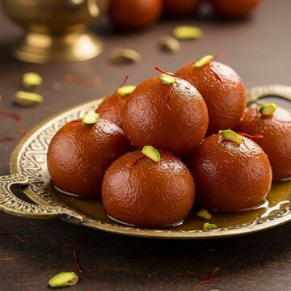
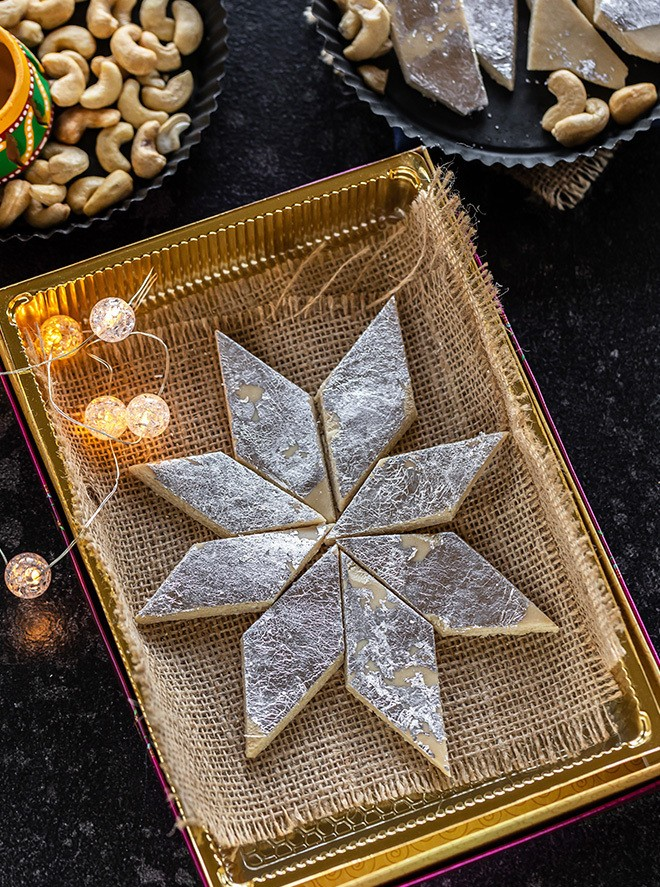

Gulab Jamun
Ingredients
- Sugar
- Bread
- Oil
Recipe
- Make the Dough - Mix milk powder, a little all-purpose flour, baking soda, and ghee; add milk slowly to form a soft,smooth dough.
- Shape the Balls –Divide dough into small, smooth balls without cracks.
- Fry the Jamuns – Heat ghee/oil on low flame and fry balls until golden brown
- Soak in Sugar Syrup – Prepare warm sugar syrup with sugar, water, and cardamom; soak fried jamuns in it for at least 1 hour

Kaju Katli
Ingredients
- Cashew Nuts
- Sugar
- Water
Recipe
- Prepare Cashew Powder - Grind 1 cup cashews in a mixer until fine (don't over-grind or it will turn oily). Sieve to remove lumps.
- Make Sugar Syrup -In a pan, heat ½ cup sugar with ¼ cup water until it forms a 1-string consistency syrup
- Cook with Cashew Powder - Lower the heat, add the cashew powder, and stir continuously until it forms a smooth, soft dough that leaves the pan
- Roll & Cut -Place dough on greased parchment paper, roll it thin, cool slightly, and cut into diamond shapes
